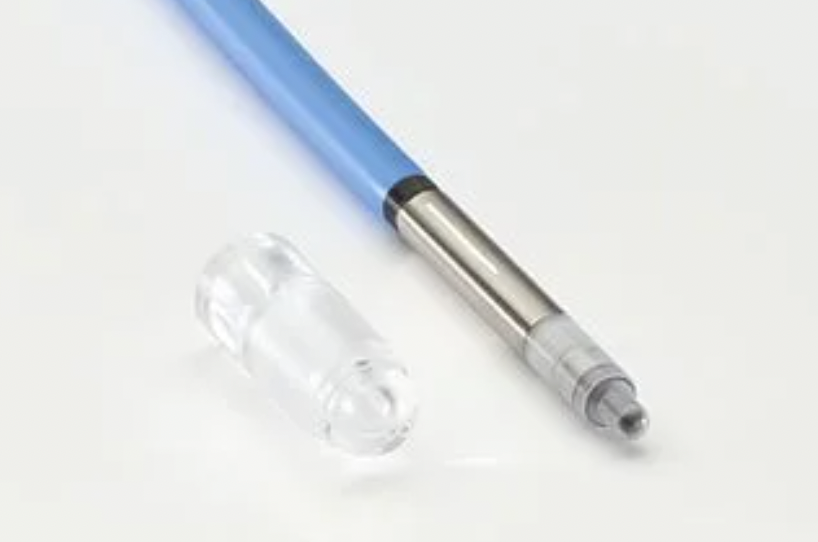

Detectores
Cámaras de ionización. Incertidumbres de medida
Cámaras de ionización
Introducción
- Relevancia: Las cámaras de ionización son el detector estándar para realizar medidas de dosis absoluta en entornos clínicos.
- Funcionamiento:
- Las cámaras de ionización son básicamente (ver esquema adjunto) capacitores en los que el dieléctrico que separa los electrodos es un gas, normalmente aire.
- Las cámaras que se emplean en los Hospitales para la medida de haces clínicos son abiertas, la cantidad de aire que contienen depende de las condiciones ambientales de presión y temperatura.
- Para funcionar una cámara de ionización tiene que estar polarizada. El voltaje de polarización lo proporciona un electrómetro al que está conectada la cámara.
- Con el paso de la radiación el gas que contienen se ioniza. La polarización de los electrodos recolecta los iones produciendo una corriente que es recogida por el electrómetro.
- La cantidad de carga recolectada es muy pequeña, del orden de nC/Gy, por lo que se necesita un electrómetro de precisión.
- La corriente producida depende de la tasa de dosis.
Dependencia con el voltaje
El voltaje aplicado está en el rango donde los iones no adquieren suficiente energía para crear nuevos iones. En estas condiciones, la corriente recogida no depende del voltaje.
Características generales
- Son el método más antiguo para medir la radiación con precisión
- Su comportamiento es conocido en profundidad, se ha estudiado en detalle teórica y experimentalmente.
- Ventajas:
- Alta fiabilidad.
- Alta precisión: 2% o mejor para medidas en hospitales, incluida toda la cadena metrológica.
- Desventajas:
- Requiere aparataje relativamente complejo (fuente estable de voltaje, electrómetro de alta precisión).
Notas históricas
Los Curie pudieron construir cámaras de ionización [imagen superior] porque contaban con un electrómetro de alta precisión hecho con cuarzo piezoeléctrico, desarrollado por Pierre Curie en sus estudios sobre piezoelectricidad.
Estas cámaras de ionización, ver una reproducción en la imagen de la izquierda, actuando como protoactivímetros, permitieron a Marie realizar su tesis sobre radiactividad que eventualmente condujeron al descubrimiento del Polonio y Radio, la fundación del Instituto del Radio y a los primeros pasos de la Radioterapia.
Tipos de cámaras de ionización
Cámaras abiertas
- Utilizadas como patrones primarios.
- Útiles solo para bajas energías.
Cámaras cilíndricas
- Diseño robusto y fiable.
- Tamaños diversos para campos grandes o pequeños.
- Simetría axial.
Cámaras planas
- Menos fiables.
- Uso en electrones de baja energía.
Paredes de la cavidad
- La cavidad se suele construir con materiales conductores equivalentes a tejido (bajo Z): grafito, aluminio.
- Las paredes se hacen lo más finas posible para evitar perturbaciones en la fluencia.
Electrodos en cámaras planas
Es frecuente separar cada electrodo en dos zonas:
Zona central: Conectada al electrómetro que mide la corriente.
Zona de guarda: El borde, polarizada con el mismo voltaje pero no conectada al electrómetro.
La zona del borde del campo eléctrico (con menor eficiencia de colección de iones) no contribuye a la medida.
- Se reduce la corriente de fuga o corriente que lee la cámara en ausencia de radiación.
Fluido Interno
- Por sencillez se suele utilizar el aire; en algunas aplicaciones especiales se emplean líquidos.
Cámaras de aire
- Abiertas:
- La cantidad total de aire contenido en la cámara y con ella su respuesta, varía con la presión y la temperatura.
- La mayoría de las cámaras utilizada en la dosimetría de campos de teleterapia son de este tipo.
- Herméticas:
- La cantidad de aire es constante y no es necesario aplicar un factor de corrección.
- Son más frágiles.
- Las cámaras monitoras de los aceleradores, las cámaras que actúan como detectores de realimentación en el bucle de control de los aceleradores lineales y monitorizan la cantidad de radiación emitida, suelen ser cámaras herméticas.
- Su sensibilidad puede cambiar por procesos de contaminación activada por la propia radiación.
Cámaras líquidas
Emplean agua o algún otro líquido adecuado para la detección de radiación ionizante.
Ventajas
- Mayor densidad: Permite una mayor eficiencia de detección y una mejor resolución espacial.
- Estabilidad: No son sensible a variaciones de presión y temperatura.
- Equivalencia tisular: Algunos líquidos pueden ser seleccionados para ser equivalentes a tejido humano, útiles para aplicaciones en dosimetría médica.
Desventajas
- Complejidad: Las cámaras de ionización líquidas pueden ser más complejas de fabricar y mantener debido a la necesidad de manejar y contener el líquido.
- Fragilidad: Pueden ser más frágiles y susceptibles a daños en comparación con las cámaras de aire.
- Calibración: La calibración es mas complicada debido a las propiedades específicas del líquido.
Se usan para investigación y en medidas exigentes en resolución espacial y perturbación de la fluencia (radiocirugía). Dura competencia con los detectores de diamante, mucho más robustos.
Caperuza de Equilibrio
Recubrimiento que se coloca sobre la cámara de ionización cuando se quiere medir en aire para asegurar que se alcance el equilibrio de partículas cargadas en el volumen de medición.
- Protección: Protegen la cámara de ionización de posibles daños mecánicos y contaminación.
La caperuza de equilibrio suele estar hecha de materiales de número atómico bajo como plástico (PMMA), grafito o aluminio. En ocasiones emplean metales más pasados como latón o incluso plomo.
Limitaciones para potenciales de aceleración superiores a 4-6 MV
- Equilibrio de partículas cargadas alterado por la aparición de contaminación electrónica proveniente del cabezal del acelerador.
- Producción de neutrones: por encima de potenciales de 10 MV se induce la producción de neutrones en los materiales de la caperuza de equilibrio, que pueden contribuir a la lectura.
- Materiales de la caperuza: Los materiales de bajo Z pueden no ser adecuados para energías altas, y el uso de materiales de Z alto podría introducir mayor producción de radiación secundaria no deseada.
Holders
Orientación
Las cámaras planas se orientan con su plano de medida perpendicular al eje del haz de radiación.
Las cámaras cilíndricas se pueden orientar con su electrodo central paralelo o perpendicular al eje del haz.
Para facilitar su sujeción y posibilitar su desplazamiento en el seno del agua los sistemas de medida están provistos de holders que aseguran la reproducibilidad geométrica.
En el sistema de PTW un conjunto de posicionadores y dedales aseguran la reproducibilidad de la colocación en el intercambio de orientación o de detector.
Conjunto de cámaras y caperuzas1

Diagramas de las cámaras de mayor uso1
Cámaras de pozo. Geometría \(4\pi\)
- Cámaras abiertas en forma de pozo con simetría cilíndrica.
- Diseñadas para la comprobación de la TKRA (tasa de referencia de kerma en aire) de fuentes de baja tasa para braquiterapia.
- Por su geometría \(4\pi\) recogen prácticamente toda la emisión de la fuente reduciendo la dificultad asociada a la rápida variación de la tasa de dosis con la posición que muestran las fuentes de braquiterapia.
- Presentan una curva de respuesta con la posición en el pozo.
Factores que influyen en la medida
Presión y temperatura
- Las cámaras abiertas tiene volumen de aire en su interior constante, pero la masa de aire no lo es.
- Es necesario corregir la lectura de la cámara por un factor igual al inverso del cociente de densidades entre las condiciones de medida y las de calibración:
\[ k_{TP} = \frac{(273.2 + t_{\text{med}}) \times P_{\text{cal}}}{(273.2 + t_{\text{cal}}) \times P_{\text{med}}} \]
- Normalmente, \(t_{\text{cal}} = 20 \, ^\circ\text{C}\) y \(P_{\text{cal}} = 101.3 \, \text{kPa}\). En cualquier caso serán los valores especificados en el certificado de calibración.
- La temperatura especificada es la del medio que rodea a la cámara, no la del aire ambiental.
Humedad
- La humedad relativa del aire afecta a la medida de la cámara, porque influye en la tasa de recombinación de iones.
- Si el factor de calibración se da para una humedad relativa del 50%, no es necesaria corrección siempre que la humedad ambiental se mantenga entre el 20% y el 80%. Los Hospitales, como la mayoría de los ediciones de trabajo actuales, son instalaciones con el aire acondicionado con el objetivo de mantener una humedad relativa del 50%.
- Si el factor de calibración se da para aire seco, se multiplica por 0.997 para obtener el factor correspondiente a una humedad del 50%.
Energía de la radiación
- La respuesta de la cámara para una dosis dada depende en general de la energía y el tipo de la radiación.
- En esta dependencia influye sobre todo la composición de la cámara (y de la caperuza de equilibrio).
- Para las cámaras usadas habitualmente, la variación sobre el rango de energías terapéuticas suele ser inferior al 5%.
- Los factores de corrección para cada modelo y cada energía están medidos con precisiones del orden del 0.3% o mejores, y se pueden encontrar en protocolos de medida.
Signo del voltaje de polarización
- Hay varios efectos que pueden hacer que la respuesta de una cámara dependa del signo del voltaje utilizado para polarizarla:
- La corriente creada por electrones Compton absorbidos en los electrodos.
- Las corrientes inducidas en el cable de la cámara.
- Si las lecturas con las dos polarizaciones son diferentes, se toma como valor correcto el promedio de las dos; a las lecturas se les aplica un factor de corrección:
\[ k_{\text{pol}} = \frac{M_+ + M_-}{2 M_{\text{cal}}} \]
donde \(M_+\) es la respuesta con polarización positiva, \(M_-\) con negativa, y \(M_{\text{cal}}\) con la polarización que se usó al calibrar la cámara.
Necesidad del factor de corrección por polaridad
Definido de esta manera se establece una vez, durante la caracterización del detector, un factor de corrección por polaridad y a partir de ahí no es necesario medir con las dos polaridades.
Un planteamiento posible pero menos eficiente sería medir siempre con las dos polaridades, obtener el promedio de las dos medidas y no emplear el factor de corrección.
Recombinación de iones
- Los iones producidos por la radiación pueden recombinarse antes de llegar a los electrodos, reduciendo la carga total recogida. La probabilidad de recombinación depende de:
- La tasa de dosis emitida por el acelerador.
- El tipo de haz producido (pulsado, barrido o continuo).
- El voltaje de polarización de la cámara.
- El factor por recombinación \(k_{\text{s}}\) se calcula mediante un tratamiento semiempírico.
Recombinación de iones: aproximación lineal
Para unas condiciones de medida al representar la variación del inverso de la lectura \(1/M\) en función del inverso de la tensión de polarización \(1/V\) se observa una dependencia lineal
\[ \frac{1}{M} = \frac{1}{M_{\text{sat}}} + \frac{C}{V} \]
- \(M\) es la corriente medida a un voltaje de polarización \(V\).
- \(M_{\text{sat}}\) es la corriente corregida por saturación.
- \(C\) es una constante que depende de las características de la cámara y de la irradiación.
Resolviendo la ecuación anterior realizando medidas en dos tensiones se obtiene
\[ k_s = \frac{1 - (V_1 / V_2)}{(M_1 / M_2) - (V_1 / V_2)} \]
El método tiene incertidumbres asociadas al rango de tensiones elegidas. Más riguroso es realizar varias medidas a diferentes tensiones y realizar un ajuste lineal.
Recombinación de iones: aproximación cuadrática
\[ k_s = a_0 + a_1\, \left(\frac{M_1}{M_2}\right) + a_2 \left(\frac{M_1}{M_2}\right)^2 \]
- \(M_1\) corresponde a la medida realizada a una tensión \(V_1\) y \(M_2\) a una medida realizada a una fracción conocida de la tensión \(V_1\), \(V_2 = V_1/n\).
- Los valores de los coeficientes \(a_0\), \(a_1\), \(a_2\) están recogidos en los protocolos de medida para valores concretos de \(n\) y distinguiendo entre haces pulsados y haces pulsados y barridos.
Equivalencia de las dos aproximaciones
Para \(k_s <\) 1.03 las dos aproximaciones produces resultados con diferencias inferiores al 0.1%.
Corriente de fugas
- Debido a fallos de aislamiento entre los electrodos, o en el cable de alimentación de la cámara, puede producirse corriente en la cámara en ausencia de radiación.
- Dicha corriente se denomina corriente de fuga, y debe restarse a la corriente medida cuando hay radiación; así la corriente real será:
\[ I_{\text{real}} = I_{\text{med}} - I_{\text{fuga}} \]
Si la lectura se realiza en carga total acumulada, habrá que restar, a la medida de la carga con radiación, la medida de la carga recogida sin radiación durante un tiempo igual al que se usó para registrar la señal.
Los electrómetros modernos vienen provistos de una función de cero que estima esta valor de fondo mediante una lectura que se realiza antes de comenzar las mediciones.
Efecto tallo
- Alteraciones en la lectura introducidos por los cables que conectan a la cámara con el electrómetro:
- La producción en el cable de radiación dispersa que llega a la cámara.
- La producción en el cable de pares de iones que contribuyen a la corriente.
- Se estima estudiando cómo varía la respuesta al cambiar la posición del cable.
Relación entre carga y dosis absorbida
- La relación entre la carga recogida por una cámara, \(Q\), y la dosis absorbida es:
\[ D_{\text{aire}} = \frac{Q}{m_{\text{aire}}} \cdot \left(\frac{W_{\text{aire}}}{e}\right) \cdot \prod k_i \]
- donde \(m_{\text{aire}}\) es la masa de aire dentro del volumen de colección, \(W_{\text{aire}}\) es la energía media necesaria para crear un par de iones y los \(k_i\) son factores de corrección que toman en cuenta los efectos descritos anteriormente.
- \(W_{\text{aire}}/e = (33.97 \pm 0.06) \, \text{J/C}\) para aire seco a 20ºC y 1 atm.
- \(W_{\text{aire}}/e = (33.77 \pm 0.06) \, \text{J/C}\) para aire a 20ºC y 1 atm con un 50% de humedad relativa.
Medida absoluta de la dosis
- Si se conoce con precisión el volumen de la cámara, es posible realizar una medida absoluta de la dosis a partir de la ecuación anterior, solo factible para cámaras especiales (cámaras abiertas o cámaras esféricas) utilizadas en los laboratorios primarios de calibración.
- Las cámaras empleadas en los hospitales basan su calibración en la comparación con un patrón primario o secundario.
Incertidumbres de medida y control de calidad
- Definición de incertidumbre: Intervalo probable donde se encuentra el valor real.
Definición operativa
Estimación de las variaciones que pueden introducir las correcciones no realizadas.
- En el mundo macroscópico las relaciones entre las variables son deterministas.
- Las variables aleatorias muestran la presencia de variables ocultas o de las que desconocemos su valor actual.
Ejemplo
- Medimos la dosis con una cámara de ionización pero no disponemos de barómetro. Tomamos la presión normal corregida por la altitud y no consideramos la posible variación respecto al valor promedio.
- Incluso aunque la dosis que queremos medir no cambie realmente observaremos variaciones asociadas a los cambios de presión.
- Planteamiento erróneo: considerar que la dosis está cambiando
- Planteamiento correcto: hacer una estimación de cuánto puede variar la presión respecto al valor tomado, estimar su impacto sobre y asignarlo como incertidumbre.
Clasificación de incertidumbres
- Las incertidumbres de las mediciones se expresan como incertidumbres estándar relativas y la evaluación de las incertidumbres estándar se clasifica en tipo A y tipo B.
Tipo A
Las incertidumbres estándar tipo A son aquellas que se evalúan mediante análisis estadístico de una serie de observaciones.
Tipo B
Las incertidumbres estándar tipo A son aquellas que se evalúan por otros medios: conocimiento previo, experiencia, documentación, referencias, etc.
En nuestro ejemplo anterior la incertidumbre será de tipo B porque necesitaremos información que no proviene de nuestros datos sobre la variación normal de la presión en el sitio de medida.
Categorización tradicional
Se considera inadecuado distinguir entre contribuciones aleatorias y sistemáticas. Por ejemplo, una componente aleatoria de incertidumbre en una medición puede convertirse en una componente sistemática de incertidumbre en otra medición en la que el resultado de la primera medición se utiliza como un dato de entrada.
Estimación de incertidumbres tipo A1
- En una serie de \(n\) mediciones, con valores observados \(x_i\), la mejor estimación de la cantidad \(x\) se da generalmente por el valor medio aritmético:
\[ \bar{x} = \frac{1}{n} \sum_{i=1}^{n} x_i \]
- La dispersión de los n valores medidos \(x_i\) alrededor de su media \(\bar{x}\) se puede caracterizar por la desviación estándar:
\[ s(x_i) = \sqrt{\frac{1}{n-1} \sum_{i=1}^{n} (x_i - \bar{x})^2} \]
- La cantidad \(s^2(x_i)\) se llama varianza de la muestra.
- A menudo estamos interesados en la desviación estándar del valor medio, escrita como \(s(\bar{x})\), para la cual se aplica la relación general:
\[ s(\bar{x}) = \frac{s(x_i)}{\sqrt{n}} \]
- Una forma alternativa de estimar \(s(\bar{x})\) se basaría en el resultado de varios grupos de mediciones. Si todos son del mismo tamaño, las fórmulas anteriores aún se pueden usar, siempre que \(x_i\) se tome como la media del grupo \(i\) y \(\bar{x}\) sea la media general (o media de las medias) de los n grupos. Para grupos de diferentes tamaños, se tendrían que usar pesos estadísticos.
- La incertidumbre estándar de tipo A, denotada aquí por \(u_A\), se identificará con la desviación estándar del valor medio; es decir:
\[ u_A = s(\bar{x}) \]
- Una determinación empírica de una incertidumbre no puede esperarse que dé su valor verdadero; por definición, es solo una estimación. Esto es válido tanto para las incertidumbres de tipo A como para las de tipo B.
- La incertidumbre de tipo A en la medición de una cantidad puede, en principio, reducirse aumentando el número n de lecturas individuales.
Estimación de incertidumbres tipo B1
Para poder estimarse la incertidumbre estándar debe asumirse primero unos límites de variación y algún tipo de distribución de probabilidad. En nuestro ejemplo la presión en Madrid varía de forma normal con una variación máxima de 60 hPa.
Por sencillez se suelen considerar distribuciones simples.
Si se toma una distribución rectangular, igual probabilidad en cualquier lugar dentro de los límites máximos dados \(-M\) y \(+M\):
\[ u_B = \frac{M}{\sqrt{3}} \]
- Si la distribución asumida es triangular (con los mismos límites):
\[ u_B = \frac{M}{\sqrt{6}} \]
- Para una distribución Gaussiana (normal) la incertidumbre estándar se puede derivar estimando primero algunos límites \(\pm L\) y luego dividiendo ese límite por un número adecuado:
\[ u_B = \frac{L}{k} \]
donde \(k = 2\) si el experimentador está bastante seguro y \(k = 3\) si el experimentador está casi seguro de sus límites.1
Generalmente no se usan divisores distintos de 2 o 3 debido a la naturaleza aproximada de la estimación.
Incertidumbres combinadas y expandidas
- Dado que las incertidumbres de tipo A y tipo B son desviaciones estándar estimadas, se combinan para obtener una incertidumbre combinada \(u_c\) utilizando las reglas estadísticas para combinar varianzas:
\[ u_c = \sqrt{u_A^2 + u_B^2} \]
- La incertidumbre estándar combinada todavía tiene el carácter de una desviación estándar. Si se asume que tiene una densidad de probabilidad Gaussiana, la desviación estándar corresponde a un límite de confianza de aproximadamente el 68%.
- Es frecuente multiplicar la incertidumbre estándar combinada por un factor de cobertura \(k\) para obtener una incertidumbre expandida
\[ u = k\cdot u_c \]
- Los valores del factor de cobertura de \(k = 2\) o \(k = 3\) corresponden a límites de confianza de aproximadamente el 95% o el 99%.
- El valor numérico tomado para el factor de cobertura debe indicarse claramente.
Tolerancia y rangos de aceptabilidad
Tolerancia
Rango en el que se debe encontrar el valor real para que el resultado de una prueba se considere aceptable.
- La tolerancia se define por criterios externos al procedimiento de medida.
- Tolerancia e incertidumbre son en principio dos conceptos independientes aunque en general consideramos deseable que la incertidumbre sea apreciablemente menor que la tolerancia.
Tolerancia modificada por la incertidumbre
- La incertidumbre en las mediciones puede ampliar o reducir los intervalos de tolerancia, en función de la no criticidad o criticidad del resultado, para reflejar la variabilidad adicional introducida por factores desconocidos o no controlados y aumentar la confianza en obtener un resultado aceptable.
Para ampliar la tolerancia por la incertidumbre (resultado no crítico), se puede sumar y restar la incertidumbre estimada a los límites de tolerancia originales. Por ejemplo, si el intervalo de tolerancia original es [L, U] y la incertidumbre es ±Δ, el intervalo modificado sería [L-Δ, U+Δ].
Para reducir la tolerancia (resultado crítico) el intervalo modificado sería [L+Δ, U-Δ]

Control estadístico de procesos
Causas asignables
- Definición: Las causas asignables, también conocidas como causas especiales o causas específicas, son fuentes de variación en un proceso que pueden ser identificadas y eliminadas. Estas causas son distintas de las causas comunes, que son inherentes al proceso por no poder ser identificadas.
- Identificación: Las herramientas de control estadístico, como los gráficos de control, son herramientas que ayudan en la identificación de las causas asignables por ejemplo mediante la correlación de variables.
- Acción Correctiva: Una vez identificadas, las causas asignables deben ser investigadas y eliminadas mediante la introducción de la correspondiente corrección para mejorar la calidad de nuestra medida.
Importancia de las causas asignables en relación a la incertidumbre
La identificación y eliminación de las causas asignables reduce la incertidumbre.
Las causas asignables son correcciones que nos acercan al valor verdadero.
Una incertidumbre debería ser siempre de naturaleza puramente aleatoria
Incertidumbres sistemáticas
Se desaconseja la referencia de incertidumbres sistemáticas. Una incertidumbre sistemática es una causa asignable, una corrección a realizar y por tanto eliminar.
La serie temporal permite identificar un incremento lineal en el tiempo, causa asignable, y eliminarla acercando la variación residual a una variación normal que se centra en cero.

En esta figura se muestra lo que ocurre al intentar corregir la deriva basándose únicamente en la medida del instante anterior. Al no identificarse la causa asignable, la componente aleatoria predomina y por su naturaleza esta componente no se puede corregir. Los histogramas no muestran reducción de la varianza.

Cámaras de ionización. Incertidumbres de medida